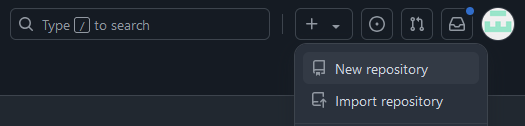
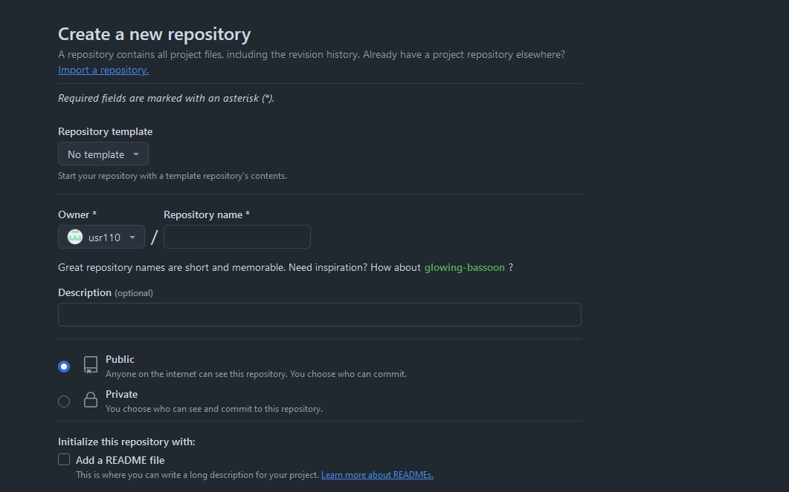
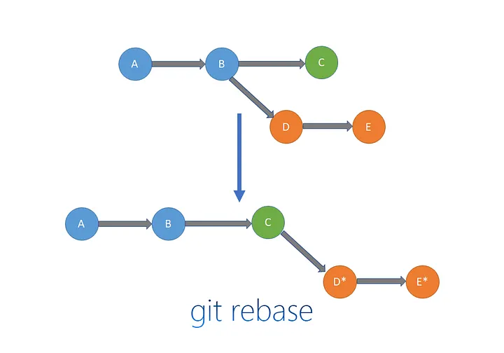
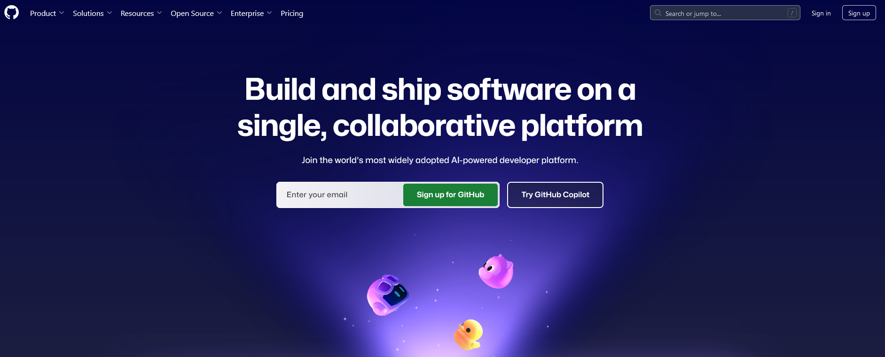

Open Research, Collaboration and Publishing with GitHub
Overview
-
Open Research, Collaboration and Publishing with GitHub
- Including slides
- Example project
Reproducibility Crisis
Reproducibility crisis in research
Learning objectives
- Learn what
Gitis all about- History
- Objectives
- Organize your work using a repository
- Existing work
- Create new work
- Publish your work on GitHub
- Share your work for collaboration
Website
Structure of the day
| Topic | Slides/content |
|---|---|
| Overview with the focus on Git and GitHub | Overview |
| Introduction to Quarto | Quarto |
| Publishing using Zenodo | interactive |
Git
Git history
- Background: relationship between Linux and Bitkeeper (a distributed version control systems (DVCS)) broke down
- Based on lessons learned, Linus Torvalds (the creator of Linux) developed his own version control system (VCS) and called it Git (2005) with:
- Speed
- Simple design
- Strong support for non-linear development (thousands of parallel branches)
- Fully distributed
- Able to handle large projects like the Linux kernel efficiently (speed and data size)
source: https://git-scm.com/book/en/v2/Getting-Started-A-Short-History-of-Git
Key milestones
Key Milestones in Git’s development:
- Initial release and Git 1.0 (2005): From first version of Git to a broader usage, beyond the Linux kernel project, with version 1.0
- GitHub Launch (2008): a web-based platform for hosting Git repositories, revolutionized how developers collaborated on open-source projects. GitHub’s user-friendly interface and social features accelerated Git’s adoption.
- Wide Adoption (2010s): From 2010s, git became the standard VCS
Source: https://www.geeksforgeeks.org/history-of-git/
Git comic

Configuring Git
Setting up user name and email
If you are concerned about privacy, please review GitHub’s instructions for keeping your email address private.
Set Personal Access Token (PAT)
PAT to communicate with Github requires:
- Visit Github token generator
- Or from R, use
usethis::create_github_token()
- Or from R, use
- Select these scopes at a minimum: repo, user, and workflow
- Press Generate token
- Copy the generated PAT to your clipboard - and save it in a notepad
- Provide this PAT next time a Git operation asks for your password or store it by calling
gitcreds::gitcreds_set()
Instructions from: Happy Git and GitHub for the useR
Git commit
Git has four main states that your files can be in:
- Untracked: You’ve created a new file and not told git to keep track of it.
- Modified: You’ve changed a file that git already has a record of, but have not told git to include these changes in your next commit. We say these files are in the
working tree. - Staged: You’ve told git to include the file next time you do a commit. We say these files are in the
staging area. - Committed: The file is saved in it’s present state in the most recent commit.
At each step in the process, the file is stored in a different area:

Exercise: create a git repo on Github
go to github.com/user_github_username
Create new repo
Go to https://github.com/new and then specify repository name
Leave all things as is - don’t add README file or change any other option
Locally create a git repo
Go to the directory where you’d like to create a git repo - say C:/Github
# Initialized a git repository called `test_repo`
git init NAME_OF_THE_REPO
# go to the newly created dir
cd NAME_OF_THE_REPO
# Add some text to README.md
echo "# name_of_the_repo" >> README.md
# Add README.md to git
git add README.md
# Make a first commit
git commit -m "init commit - add README.md"
# Rename branch name to main
git branch -M main
# Add remote origin
git remote add origin https://github.com/GITHUB_USERNAME/NAME_OF_THE_REPO.git
# Git push
git push -u origin mainGit help and manual
In case you forget options of a command, you can access the relevant list of options typing git <command> -h or access the corresponding Git manual by typing git <command> --help, e.g.:
Exercise: Create an untracked file
- Create a new file in your repository.
$ notepad new.txt
Lets check what git can see…
$ git status
git status
Highlights your working branch -> main
Reports commit status -> none yet
Highlights untracked files -> new.txt
Proposes adding these to git with ‘git add’
Exercise: create a git branch
- Create a new branch using:
git branch my-shiny-new-branch - Checkout the branch using:
git checkout my-shiny-new-branch - Make a change in your new branch by editing new.txt and committing the changes.
- Note: you can combine the first two steps into one using
git checkout -b my-shiny-new-branch - Optional: set it upstream by
git push --set-upstream origin my-shiny-new-branch
Exercise: switch between branches

Advanced Git Concepts
Not covered
- Merging branches
- Resolving merge conflicts
- Git rebase
- Rewriting commit history
Git Merge
Git Rebase
How git rebase works
GitHub Desktop
To clone or to fork (1/2)?
Use a clone when:
Collaboration (team or owner) OR all of the following is true:
It is owned by someone else and you are happy not to have ownership of the codebase
You have permission to push branches up to the repo
You want easy access to the latest changes made by others to the central repository
You want the main branch in the repo to be updated and edited by others working on the project
To clone or to fork (2/2)?
Use a fork when:
- The owner of the repo is not someone you are actively collaborating with
- You want to take the development of the code in a different direction from the original owner of the repo
- You want full ownership over your version of the codebase
- You want complete control over other’s contributions to the codebase
- You do not want or have permission on the main branch
GitHub
- GitHub is a website that lets you store your repository publicly for free
- Allows to create, store, manage and share code

Overview of an example repo
Publishing Repositories on GitHub
Creating a New Repository on GitHub Public vs. private repositories
-
Pushing Local Repositories to GitHub
git remote add and git push commands
README and Documentation
Importance of clear project descriptions
Licensing
Your Project Choosing an open source license GitHub Releases Tagging and creating releases
Best practices for project organization
- Treat data as read only
- Describe data cleaning/wrangling steps
- Treat generated output as disposable
- Separate function definition and application
- Save the data in the data directory
How to name files
- Avoid spaces
- Number them with to follow order with a prefix as
01_read_data.Rfor the first file in the analysis - For dates in filenames, use the ISO 8601 format YYYY-MM-DD (or YYYYMMDD) to ensure your files are listed in proper chronological order.
- Never use the word final in any file name - it never is!
source: An introduction to R
Create New project
We’re going to create a new project in RStudio:
- Click the “File” menu button, then “New Project”.
 ## Select project type
## Select project type
Select project Type

Click “New Directory”.
Click “New Project”.
Type in the name of the directory to store your project, e.g. “my_project”.
If available, select the checkbox for “Create a git repository.”
Click the “Create Project” button.
New project type